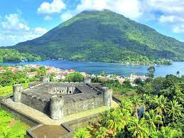
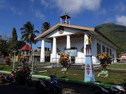
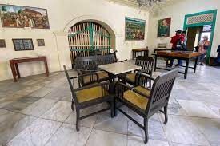

Banda Neira
Banda Tangah atau Banda Naira adalah salah satu pulau di Kepulauan Banda, dan merupakan pusat administratif Kecamatan Banda, Kabupaten Maluku Tengah, Maluku, Indonesia. Secara administratif, Banda Neira terbagi dalam 12 desa, yakni Dwiwarna, Kampung Baru, Merdeka, Nusantara, Rajawali,Tanah Rata, Lonthoir, Walang, Katoro, Kumber, Selamon, Dender, Waer dan Pulau Hatta. Topografi pulau ini cenderung datar, sehingga memungkinkan didirikannya kota kecil. Pulau Banda Neira memiliki kantor pemerintahan, toko, dermaga, dan bandara. Penduduk pulau ini berjumlah 14.000. Banda Neira pernah menjadi pusat perdagangan pala dan fuli (bunga pala) dunia, karena Kep. Banda adalah satu-satunya sumber rempah-rempah yang bernilai tinggi itu hingga pertengahan abad ke-19. Kota modernnya didirikan oleh anggota VOC, yang membantai penduduk Banda untuk mendapatkan palanya pada tahun 1621 dan membawa yang tersisa ke Batavia (kini Jakarta) untuk dijadikan budak. Pulau ini juga terkenal sebagai tempat pembuangan tahanan politik pada masa Pemerintahan Kolonial Hindia Belanda. Beberapa tokoh perjuangan nasional yang pernah merasakan tinggal di pulau ini di antaranya Mohammad Hatta, Sutan Syahrir, dan Cipto Mangunkusumo. Pada 2016, rumah tempat Sutan Syahrir dan Mohammad Hatta tinggal telah dijadikan museum sedangkan rumah Cipto Mangkusumo masih dibiarkan kosong.
Wisata
Beberapa tempat wisata yang bisa dikunjungi di Banda Neira di antaranya adalah Benteng Belgica, Benteng Nassau, Istana Mini Neira, Rumah Budaya Banda Neira, Rumah Pengasingan Bung Hatta, Lava Flow.
Istana Mini Neira
Istana Mini Neira terletak di Desa Dwiwarna, Pulau Banda Neira. Istana ini didirikan pada tahun 1622. Nama istana ini diambil karena bangunan istana ini menyerupai bangunan Istana Negara di Bogor namun dalam versi yang lebih kecil. Dahulu istana ini digunakan sebagai kantor admistrasi pemerintah Belanda dan menjadi kediaman resmi gubernur beserta residen yang saat itu memerintah di Banda.
Rumah Budaya Banda Neira
Rumah Budaya Banda Neira lokasinya berada sekitar 25 meter dari pelabuhan Pelni Banda Neira.[3] Di dalamnya tersimpan koleksi berbagai macam benda-benda peninggalan Belanda mulai dari berbagai jenis meriam hingga beberapa lukisan yang menggambarkan kondisi Banda pada saat itu
